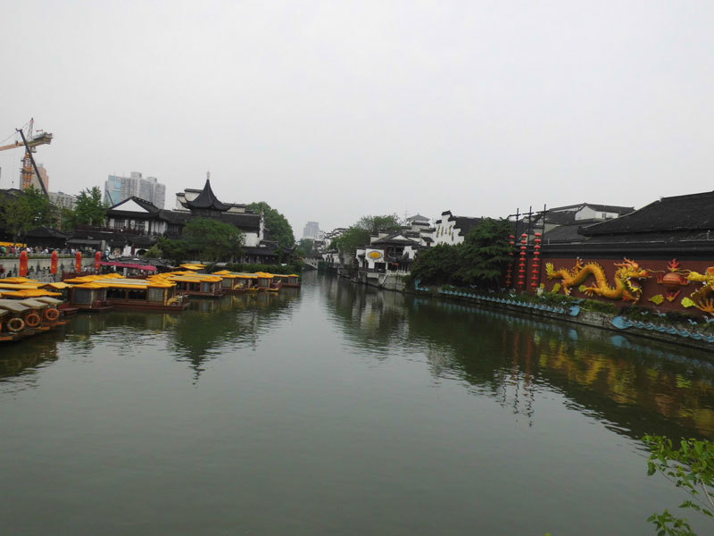

|  | 夫子庙是一组规模宏大的古建筑群，历经沧桑，几番兴废，是供奉和祭祀孔子的地方，中国四大文庙之一，被誉为秦淮名胜而成为古都南京的特色景观区，也是蜚声中外的旅游胜地，是中国最大的传统古街市。夫子庙不仅是明清时期南京的文教中心，同时也是居东南各省之冠的文教建筑群。 夫子庙始建于宋，位于秦淮河北岸的贡院街旁，庙前的秦淮河为泮池，南岸的石砖墙为照壁，全长110米，高10米，是全国照壁之最。北岸庙前有聚星亭、思乐亭;中轴线上建有棂星门、大成门、大成殿、明德堂、尊经阁等建筑;另外庙东还有魁星阁。 范蠡、周瑜、王导、谢安、李白、杜牧、吴敬梓等数百位著名的军事家、政治家、文学家有这里创造了不朽的业绩，写下了千古传诵的篇章。 历史上的夫子庙曾四毁五建，最后一次毁于1937年日军侵略的炮火。自1984年复建以来，夫子庙已接待游客一亿多人，平时日人流量在10万人次以上，节假日在30万人次以上。 |